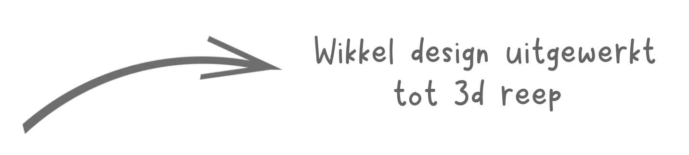
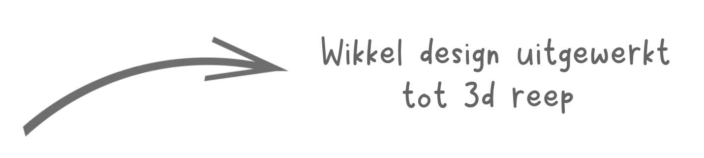

Week 1
Inspiratie
Voor inspiratie ben ik vooral veel gaan Googlen. Op deze website heb ik verschillende campagne soorten gezien. Verder zijn we als groep veel gaan brainstormen.
Ik kwam zelf met verschillende ideeën en uiteindelijk hebben we ook een van mijn idee uitgewerkt.
Het idee
Kort samengevat is ons idee uiteindelijk een galgje geworden waarbij je tijdens sinterklaas chocoladeletters koopt
en daar ook de letters in een web app spaart. De klant die het gehele woord heeft kunnen sparen wint een prijs.
Inspiratie
Hiervoor heb ik een enquete opgezet om achter te komen of men bekend is met de kernwaarden van TC en hoe zij denken over e-couponing.
Week 2
Design iteratie 1
Voor het design heb ik vooral gewerkt aan de kleine en grote display schappen. Ik was nog niet toegekomen aan de staande display.
Week 3
Design iteratie 2
Na de feedback die ik had ontvangen ben ik de displays opnieuw gaan maken. Ik heb tijdens dit proces
Vaak feedback gevraagd aan Pieter en kreeg ook het idee mee om mock-ups te maken.


Presentatie
Verder heb ik nog de presentatie in elkaar gezet om het aan het bedrijf te presenteren.
Week 4
Staande display iteratie 1
De eerste iteratie beviel mij niet, omdat hij niet in de huisstijl paste van Tony Chocolonely. Het mistte veel informatie.

Staande display
In week 4 heb ik mij ingezet voor de staande display design en een onderzoek over supermarkt displays.

 

Onderzoek display
Ik heb een korte onderzoek gedaan over verschillende displays. Hier kwam uit dat grote staande display de beste uit de test komen.
Week 5
Presentatie
Verder heb ik nog de presentatie in elkaar gezet om het aan het bedrijf te presenteren en een handboek voor Boxplosive.
Reflectie algemeen
Wat heb ik geleerd?
Ik heb geleerd om meer op details te letten om zo beter in het huilstijl te komen van het bedrijf.
Wat ging goed?
De ideeën die ik had de eerste dag kwamen goed van pas. Dit zorgde ervoor dat we genoeg tijd hadden om de puntjes op de i te zetten.
Wat kon beter?
Ik had het liefst meer designs willen maken, maar helaas kostte het mij teveel tijd om er maar 2 te kunnen maken.